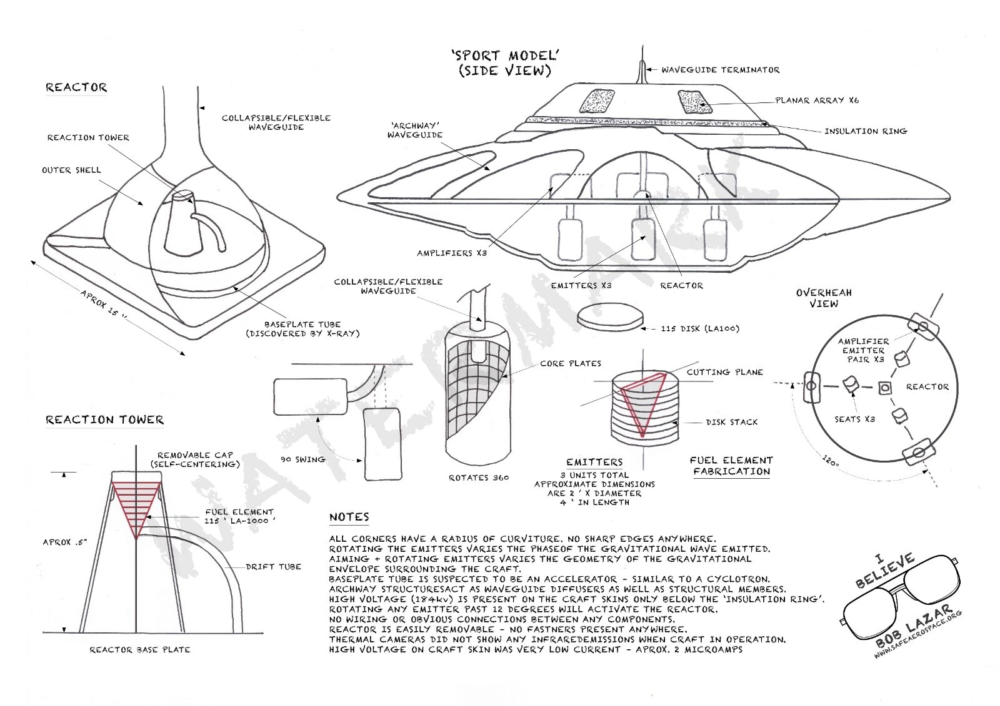

WARP_DRIVE_MATH_AUDIT.md). Materials:
The Hover Disk. Vehicle:
The Hexalock. Fringe record:
Antigravity Devices. Teardown
of Lazar’s account:
Reverse-Engineering
the Sport Model. Root ontology:
The Shape of the Universe;
formalism oph_programme.html; bench
oph_chi_nu_potlid_first_build.html.
This is an engineering paper, not a theory of everything. The theory is in the root paper: spacetime is a 3D lattice of equal-edge three-way vertices; matter is a stable closed vibration pattern in the lattice; a force is one pattern biasing how another scatters at vertices; the lattice settles continuously according to a single vertex rule. This paper takes that picture as given and asks one operational question:
Can engineered coherent matter measurably bias the way the lattice settles in its neighbourhood, and if so, how do we build a vehicle that uses the bias for controlled motion?
The mechanism is sound and conservation-respecting: a coherent body that asymmetrically shares vibrations with the lattice feels a net force, and the lattice carries the equal-and-opposite reaction — propellantless, not reactionless. The empirical record, stated once (the field guide carries the ledger with numbers): the in-air Biefeld–Brown force is ion wind — the 1955–59 French Montgolfier report itself calls it “electric wind”; every published, independently instrumented vacuum test is a null; the one claimed vacuum positive (the French vacuum residual) is documented but its numbers never reached circulation — open, neither refuted nor confirmed; Buhler’s vacuum claim fell ~40× between April 2024 and March 2026, still with no paper — watch, don’t bank. This paper therefore builds the engineering as a working hypothesis on a settled mechanism and an open magnitude (§7 says what a positive would license). It does not claim reactionless propulsion, which would violate conservation and is not what lattice coupling is.
The vehicle companion is the Hexalock — six coupling disks on the flight-proven Lynchpin airframe (Howard et al., SAE 2023; Howard patent US 11,117,065). Its flight-control half is closed engineering; only its lift half depends on the effect this paper is about. (The earlier hoverbike is a ground-effect vehicle and does not depend on the coupling.)
The full derivation is in shape_of_the_universe.html
(element-by-element reading in the_periodic_table.html);
this section gives only what the engineering needs.
| Object | What it is |
|---|---|
| Edge | One-dimensional channel along which a single vibration mode propagates. All edges have the same length L. |
| Vertex | A junction where exactly three edges meet. All vertices use the same scattering rule, derived in the root paper. |
| Face / cell | Smallest loop / smallest 3-cell of the lattice. Leading candidate cell is the regular dodecahedron (pentagonal faces, golden-ratio appearance forced). |
| Vibration pattern | An amplitude distribution on the edges. Most patterns cancel themselves at vertices; the ones that don’t are particles. |
| Force | One pattern biasing the vertex scattering for another pattern. No new fundamental fields needed. |
| Vertex-sharing strength g | When an external substrate attaches at a vertex, the lattice gains a fourth port there. The dominant element of the 4×4 scattering matrix is g: how much of an external drive enters the lattice, and how much of a lattice vibration leaves through the substrate. |
What is settled, and what is not. That electromagnetic fields curve spacetime is a theorem, not a hypothesis of this network: Einstein–Maxwell, coupling 8πG/c4, no free parameter, solved exactly for real current-carrying coils by Füzfa (Phys. Rev. D 93, 024014, 2016; effect ∝ B2). A field-conditioned machine modifies local geometry unconditionally. The open question is magnitude: the bare coupling is ≈ 2×10−43, hover sits near 10−6, and whether coherent matter climbs that distance is the bench’s to decide. The register is fusion’s: mechanism settled, the climb is the programme.
g is the number a bench reads out: how strongly a vibration on the outside port enters the three internal ports and how strongly an internal vibration leaves through it — bounded at every vertex by §3, and at substrate scale a coherent sum of per-vertex couplings over the substrate’s support. It is a summary, not an explanation: the mechanism it compresses lives at the connection layer of the electromagnetic stack (§3). Everything downstream depends on this one variable and on the layer it attaches to.
The vertex rule of the geometric consensus lattice is fully determined by three constraints — unitarity of the scattering matrix, three-fold symmetry among the three internal ports, time reversal. The same three constraints, applied to a 4×4 matrix obtained by adding one outside port at the vertex, give an analytical bound on how strongly that outside port can share the vertex.
papers/G_VERTEX_DERIVATION.md.
Two endpoints anchor the bound. At g = 0 the outside port is a perfect mirror and the internal 3×3 sub-matrix recovers the original vertex rule unchanged. At g = 1/√3 the outside port reflects nothing back to itself, the internal-port self-reflection drops from −1/3 to −2/3, and the internal-to-internal coupling drops from 2/3 to 1/3 — the geometric ceiling on how loudly a single substrate vertex can share with the lattice. The bound is geometric: it does not depend on the substrate, the drive frequency, the Hamiltonian, or any fitted parameter.
A macroscopic coherent body attaches at many vertices at once. Its
aggregate vertex sharing strength along a lattice-mode direction is a
coherent sum over those vertices, weighted by the substrate’s
coherent-mode amplitude at each and by the lattice mode’s phase
(definition, including why apparent higher-order
χν(n) terms appear at substrate level
though the per-vertex rule is linear:
CHI_NU_AS_VERTEX_SHARING_STRENGTH.md). For most
substrates the sum is small — the coherent-mode wavelength does
not match the lattice mode at the drive frequency and the phase
factor averages it to nearly zero; for substrates whose coherent modes
sit near the lattice mode it adds constructively. That is why the
§8 prescription pushes on coherent-mode frequency, structural
symmetry, broken-symmetry order and phase coherence at once: each
lifts the mode-overlap integral, and combined they multiply.
Everything above treats the coupling as one number — the right
object for a bench, since a force balance measures exactly one
coefficient — but the framework has mapped the structure that
number compresses, and the map changes where an engineer should aim.
magnetism.html (sourced from the external OPH synthesis;
cite its sources box, not this paper) establishes that “the
electromagnetic field” is three layers, only the last the
textbook object:
the_scalar_field.html §7 catalogues.
The engineering question hiding under g is therefore not
“how big is the coefficient” but which layer do
laboratory currents and fields actually touch — the
realization map from bench hardware to the carrier. That map is
open, and it is not a private gap of this paper:
the_shape_of_gravity.html §7.4 audited the gravity-
engineering literature and found exactly one surviving thread —
the gravitational and gauge branches share one carrier, an Abelian
field alone should not couple, and the laboratory-current
attachment is the missing step nobody has supplied in thirty
years. That thread and this subsection are the same statement.
g is the honest scalar summary of a coupling whose mechanism,
if it exists, lives at layer 2.
The bench consequence. The one place the layer structure already departs measurably from the textbook account at ordinary bench current is the open-circuit sector of layer 1 — the hairpin bridge of §4, where the two classical element laws disagree by a finite, cutoff-free 29%. It needs a supercap bank and a load cell, no coherent substrate, no vacuum, and no g > 0. It is therefore this paper’s primary near-term bench: it probes the layer stack directly, and either outcome calibrates the element-level physics every §6 build sits on.
the_scalar_field.html’s E★
normalization — a constraint, not a wave — and
that paper’s §9 firewall is inherited here: no fifth
force, no licensed communication channel, no anti-gravity support
from the normalization DOF. The layered structure above is
connection-level and open-circuit electrodynamics with receipts, not
scalar-wave revivalism; the two must not be blended. The scalar-wave
claim’s strongest published form — gauge-free Extended
Electrodynamics (Hively & Loebl 2019) — is registered with
its load-bearing hinge (C is sourced by charge non-conservation,
so conservation ⇒ C ≡ 0 ⇒ Maxwell exactly) in
papers/EED_HIVELY_EQUATION15_NOTE_2026-08-13.md.
Scope note on energy: this firewall rejects scalar-wave
energy claims that name no reservoir; it does not
touch boundary-coupled vacuum/near-field extraction, a lawful
open-system question with a measured anchor and its own falsifiable
signature (runs cold under load), owned by
zero_point_energy.html §7 and
optical_cavity_zpe.html. The discriminator is reservoir
inventory, not vocabulary.
Anti-gravity in the sci-fi sense — a force that pushes against
Earth’s gravity from outside the laws of physics — is not
what we mean and not what we are building. (The mechanism intuition
— an energy gradient warping spacetime into a dent the body
falls into — is developed in warp_drive.html
§1.) In the lattice picture, what we mean is precisely this:
Equivalent phrasings, used interchangeably in this paper:
All four mean the same engineering thing: a measurable force on a coherent body that depends on the body’s coherence and drive-asymmetry, that survives all the standard artifact controls (orientation flip, phase flip, dummy mass, ordinary-vibration null), and that is not predicted by Newtonian / Maxwellian / acoustic accounting of the same hardware in the same room.
The hairpin lemma. The closed/open dichotomy has a worked
classical-EM microcosm
(crypto_oracle/universe_sim/ampere_tension_sim.py;
papers/AMPERE_LONGITUDINAL_SECTOR_NOTE_2026-07-20.md): a
closed current loop cannot force its own centre of mass — both
historical force laws agree, numerically, to nothing — but an
open sub-circuit, a hairpin bridge whose current closes
through the rails, feels a real net force, and on that open geometry
Ampère’s original element law and the textbook Lorentz
law disagree by a finite, cutoff-free 29% (5.35 vs 6.91 gram-force
at 270 A — a supercap bank and a load cell adjudicate).
In this paper’s language: the craft is the bridge and the
substrate is the rails. A vehicle that rigidly carries its whole
drive pattern is a closed loop and gets exactly zero; every viable
propulsion architecture here is an attempt to close the circuit
through the medium, and g is that circuit’s port
conductance. Divergences in the element law localize at junctions
and cancel pairwise — the physics lives on the ports, as
everywhere in this framework
(papers/PORT_LOCALITY_SYNTHESIS_2026-07-20.md). Per
§3, this experiment is the paper’s primary
near-term bench.
From the lattice picture, an effective g > 0 should appear most cleanly when the substrate satisfies the following conditions simultaneously:
Not all six are required; a working substrate satisfies four or
more. Conditions (1), (2), (3), (5) and (6) are accessible at the
bench (oph_chi_nu_potlid_first_build.html); condition
(4) is what selects the multiferroic class as the framework-favoured
engineering target.
Any device that produces a measurable lattice-coupling effect contains the same six components. They do not depend on scale; only the substrate material, the drive geometry and the readout resolution scale with the vehicle.
Companion papers implement this stack at concrete scales: bench,
oph_chi_nu_potlid_first_build.html (12-piezo rim drive on
a 275 mm stainless plate, HAPTIC per-port sensing, pendulum
readout, full controls battery); drone, the
Hexalock; the saucer scales the same six components to the closed
shell of §10. Receipts use the pot-lid paper’s fixed verdict
schema (LATTICE_COUPLING_CANDIDATE,
PROPULSION_RECEIPT_PASS, …); this paper inherits it
and does not duplicate the bench protocol.
A bench return licenses claims at the level of the bench: that the substrate measured at that geometry has a non-zero aggregate gsub; that the coupling is real, repeatable, controlled, and not an artifact. It does not by itself license vehicle-scale operation; that follows from substrate ladder position + vehicle-scale drive geometry + the ladder of §13. Forbidden is exactly one practical capability: FTL signalling or transit in flat, un-engineered spacetime (§14C). Everything else on the ladder is engineering, gated as §13 enumerates.
The framework picks out one substrate class as the engineering target. The reasoning follows from the vertex-sharing bound (§3) plus the mode-overlap structure of the per-substrate aggregate; no inverse solver is a prerequisite. We can reason to the prescription now, then build it.
The per-substrate aggregate is the coherent sum over many vertices of (per-vertex g) × (substrate mode amplitude) × (phase factor). Maximising it asks four things at once, each a multiplier on the mode-overlap integral:
Where the power comes from — the shell is the
reactor. The hull itself is the natural power boundary, not
a compact core that feeds it: the measured mechanism this project
anchors to (zero_point_energy.html) is an interface effect
whose output scales with junction area, so a shell that is
the craft’s own shape offers area a compact reactor cannot match
without a V2/3 penalty. Full treatment, tiered by
confidence: THE_SHELL_IS_THE_REACTOR_2026-07-20.md —
an engineering hypothesis, not a settled result.
Several researchers over fifty years have reported phenomena that look, in retrospect, like attempted measurements of vertex-sharing g under other vocabularies. The field guide carries the full ledger with numbers; this section keeps only what bears on this paper’s substrate choices.
Every published, independently instrumented vacuum test —
Talley (1988–91), Tajmar (2004), Bartlett & Tajmar (2021),
and the comprehensive Dresden sweep (Tajmar, Kößling &
Neunzig, Sci. Rep. 14:19427, 2024: capacitors, solenoids,
tunnelling currents, ε/μ gradients, shielded toroids, all
~nN) — tested static, incoherent articles. A static, or uniformly
rotating, mirror-symmetric drive has κ = 0 by the
conservation books: it structurally cannot rectify, and this framework
predicts those nulls — frozen in a pre-registration and
scored (RESULTS_BIEFELD_BROWN_2026-08-13.md: an incoherent
Brown-class capacitor at the bare floor gives ≤
3×10−42 N, 35–39 orders below every
balance used). No published article carried even one of the four
§8 predicates, so the test matrix has exactly one untested cell,
and this paper’s architecture sits in it. That is a
target, not a rescue: the first null with the coherence
predicates instrumented and verified present would be the first
null that reaches this framework.
Li and Torr (1991–97) predicted a rotating type-II superconductor would generate a gravitomagnetic field many orders above general relativity; the theory is refuted on its own terms (Harris 1999). Tajmar (2006) reported an effect ~1020× GR in a rotating niobium ring; the Canterbury group (Graham et al., Physica C 468, 383, 2008) bounded any such effect >22× below that with a ring-laser gyro and a lead superconductor, and Tajmar himself reattributed the 2006 signal to acoustic coupling (confirmed in his 2022 Frontiers review). Podkletnov’s rotating-disc weight loss is unreplicated (Hathaway et al. 2003: null to 0.001%). In the lattice picture the Canterbury 2008 null is the cleanest existing upper bound on g in s-wave superconductors. The §8 prescription targets a different class (multiferroic / condensate boundary), so the Canterbury bound calibrates expectations for s-wave geometries without constraining the convergent substrate.
Townsend Brown’s asymmetric-capacitor geometry is the right
shape for a κ ≠ 0 drive (§11); his
in-air force is ion wind (§1). The 1956 Electrogravitics
Systems report is aviation-trade market intelligence —
industry interest, not physics evidence — and is cited as
nothing more. Buhler’s “Exodus effect” is an open
thread, declining under scrutiny, no paper (§1); the cross-check
against this framework’s force law is warp_drive.html
§6 / hover_disk.html §15. Pais’s Navy
patents are real and granted; the HEEMFG null is uninterpretable (the
rig could spin or vibrate, never both, and never reached
specified charge) and the claimed physics fails by ~10 orders on its
own numbers — mine the geometry (double-shell charged/insulated
cavity, counter-spin, acousto-optic dual drive), discard the claims.
Puthoff’s polarizable-vacuum representation of GR is the
structural ally of the derived scalar law
(WARP_DRIVE_MATH_AUDIT.md §8): same sign, same
bare-coupling floor, and the source of the opposite-sign
K < 1 mechanism the ladder’s far end needs.
Terrence Howard’s persistent return to pentagonal / dodecahedral structure produced one real artefact: the Lynchpin airframe (patent US 11,117,065 B2, 2021; Howard, Molter, Seely & Yee, SAE Int. J. Aerosp. 16(3), 2023 — a 651 g prototype that flew on PX4). It is a conventional multirotor; the geometry, matching the leading candidate primitive cell, is the data point, and it is the chassis the Hexalock adopts. The specific number- theory claims attached to it are not used. Robert Lazar’s Sport Model is the most architecturally detailed public account of a saucer-class vehicle; its load-bearing yield is §11.
What this network adds to a shape being independently rediscovered is a specific mathematical structure (root paper), a specific bench protocol (substrate ladder + discriminator set), and a receipt schema that licenses or refuses to license each claim cleanly.
If the coupling is real and large enough to lift a person-scale vehicle, the optimal vehicle shape is approximately a disk with a thickened rim and a central cabin — not because physics dictates the saucer in any mystical sense, but as the engineering optimum for the architecture, as a fixed wing is for lift-via-airfoil:
The materials for each layer are ranked in hover_disk.html
§8. The Hexalock applies the same
logic at drone scale — six coupling disks on the six pentagons
of a collapsed dodecahedron, an always-invertible 6×6 mixer
— as the six-segment prototype; the saucer is the twenty-segment
full vehicle. Both use the §6 stack.
Robert Lazar’s “Sport Model” (Knapp 1989; Corbell 2018; Rogan 2019; Michels 2026) is the most architecturally detailed public description of a saucer-class vehicle. We treat it as architectural data, not physics testimony: whether the events at S-4 happened as described is not a question this section settles. The question it settles is — if the Sport Model exists as described, what is it in lattice terms, and what does that tell our own programme?
warp_drive.html
§3 derives and §5 builds. Buildable.Lazar names the fuel a stable isotope of moscovium. The specific identification is wrong on standard chemistry. The framework-relevant claim is weaker and stronger at once: weaker because atomic number 115 is not required; stronger because the framework predicts a substrate class — a material with very high coherent-mode characteristic frequency and very high gsub.
hover_disk.html §7.10 (headline claims
refuted, one untested d-hole spin channel, decisive test an afternoon
on a SQUID). The substrate ladder of §8 and the
hover_disk.html scoreboard identify which members are
reachable with current chemistry. Element 115 is one candidate label,
and probably not the correct one.
Two of Lazar’s most consistently repeated observations are optical: the skin reads as polished pewter at centimetre range but “too uniform, almost rendered” from across the hangar, and the interior stayed dark under halogen floodlights — the material seemed to consume light. In the lattice picture both are one mechanism at different incidence: a substrate with large mode-overlap couples incident EM into its coherent mode rather than re-radiating it.
CHI_NU_AS_VERTEX_SHARING_STRENGTH.md),
and a body’s absorptance rises and falls with the same
mode-overlap: Asub(ω) ∼
|χν(ω)|2, so an ideal substrate has
Avisible → 1. A material that couples
optical-frequency EM into a coherent matter mode is
“photonic” and “matter” at once —
predicate 4 already names it — and it eats light at the
visible band while biasing gravity at the drive band: two faces of one
coupling, and the dark face is the cheaper one to test.
hover/substrate_material_ranker.py). It makes the
top-ranked substrates (icosahedral quasicrystals, doped fullerites,
the BiFeO3 / cuprate stack) falsifiable here: if the
best-coupling materials are not optically anomalous, the
one-coupling reading is wrong. Necessary, not sufficient.
This paper is one application of the root paper
(shape_of_the_universe.html): can we engineer a
substrate that biases lattice settling in a useful direction? The
compute lane is another application of the same root — a
substrate that settles a constraint problem
(desktop_optical_supercomputer.html;
p_equals_np.html). The two share the vertex rule and
g, diverge in the engineering, and re-converge in the receipt
schema. No capability below waits on the compute lane.
Achievable performance is set by the mode-match efficiency η =
gsub/gmax at the operating
drive frequency; for gradient scale L the required aggregate
scales as gsub·Scoh ∼
a·L/c2. The ladder is one
mechanism at increasing strength (warp_drive.html
§8), not separate effects:
| Rung | Acceleration | Required coupling |
|---|---|---|
| Hover, atmospheric flight (the near-term drive) | 0.1–1 g | Modest η: coupling·asymmetry ~10−6 of full coherence (§8 stack, rung 2). |
| Tic-Tac envelope, with cabin counter-substrate | 103–104 g | Near-saturation, partial coherent shell. |
| Near-c flight | → relativistic | Near-saturation; forward time dilation per standard relativity. |
| Whole-shell closure — warp bubble / wormhole throat | effective FTL (ceiling ~c2/L) | gsub·Scoh → 1 across a full closed coherent shell. |
warp_drive.html §2).
The table sets the force each rung needs; the energy
splits it in two. The top rung is hover = statics: the
lattice supports the craft like a table holds a book, so once support
reaches weight it costs ≈ zero energy to hold. Every rung below
is travel = dynamics: accelerating costs energy,
regeneratively recoverable KERS-style, so a round trip costs losses
plus net work — never free; the first law forbids net energy out
and no exotic fuel is implied.
The four gates between the bench-testable force and
the ladder’s far end are quantitative, not rhetorical
(WARP_DRIVE_MATH_AUDIT.md §§4, 8), and none is
cleared:
The honest line on speed: only flat-space FTL is forbidden; effective FTL via metric engineering — the Alcubierre / Morris–Thorne class — is GR-legal, and gated as above. Light locally travels at c everywhere; the far rung shortens or warps the path, it does not outrun light along it.
Three things this paper deliberately does not carry. Wormhole
transit: a whole-shell closure with a topological handle, same
four gates — the mechanism paper owns it
(warp_drive.html §8). Backward time travel:
the one sentence kept is the guardrail — the framework’s
repair-layer no-signalling obligation OB-1
(OPH_OBLIGATIONS_LEDGER.md, proven-conditional) and
Novikov self-consistency mean nothing here licenses a controllable
signal or history into the past; CTC variants stay additionally gated
on chronology protection, an open conjecture. P = NP /
the compute chamber: an accelerator for drive-pattern inverse
design if it reaches its design point, on no critical path here
(§12).
Three categories. Engineering effort does not change category membership; it only moves capabilities from “engineering-gated” to “built.” Forbidden capabilities cannot be unlocked by any engineering effort. The table preserves pre-registration so the framework cannot move goalposts post hoc.
| Capability | Math license |
|---|---|
| Hover, atmospheric flight, supersonic with coherent bubble (§4) | §8 convergent substrate at modest η. Required δν ~ 10−13. |
| Tic-Tac-class manoeuvres (103–104 g) with occupant inertial damping | §8 substrate near saturation; cabin counter-substrate engaged. Required δν ~ 10−12. |
| Near-c relativistic flight | Same substrate; forward time dilation per standard relativity. |
| Whole-shell closure (§13): engineered local curvature, warp bubble, wormhole throat — effective FTL | Near-saturation substrate across a full closed shell (gsub·Scoh → 1), plus the nonlinear-Einstein regime and an opposite-sign region — the four §13 gates. CTC variants additionally conditional on chronology protection failing (open conjecture) and on OB-1; not this paper’s job. |
| Engineering item | Gate |
|---|---|
| Hairpin bench (§4) | Supercap bank + load cell, no coherent substrate; calibrates the element-level physics every build sits on. |
| First §8 convergent-substrate cell (BiFeO3 on quasicrystal, SC boundary, THz drive) | Current materials-fab capability; returns η at one geometry under the field guide’s discriminator set. |
| Hexalock → saucer-class vehicle (Tic-Tac envelope) | One disk benched before six are built; then the §8 cell scaled to the §10 shell plus cabin counter-substrate. |
| Whole-shell closure, lab-scale first | Two saturated §8 cells phase-locked; the four §13 gates. Beyond this the mechanism paper owns the programme. |
| Capability | Reason forbidden |
|---|---|
| FTL signalling or transit in flat (un-engineered) spacetime | Lattice modes propagate at c locally. The vertex rule’s propagation speed is fundamental, not adjustable. Whole-shell closure (§13) is a metric shortcut, not a local violation; light inside still moves at c. |
| Closed timelike curves that violate self-consistency | Novikov self-consistency: the lattice only settles into configurations where no contradiction propagates. “Kill your grandfather” outcomes are not licensable; the lattice does not settle into them. |
| Per-vertex sharing strength g > 1/√3 | Vertex-Sharing Bound (§3, theorem). Geometric ceiling. No substrate, no drive amplitude, no geometry exceeds this at any single vertex. |
This paper uses lattice-language by default. Earlier drafts and some companion papers use a denser technical vocabulary. The dictionary:
| Plain phrase used here | Equivalent technical name in earlier drafts and companion papers |
|---|---|
| Vertex sharing strength g | Per-vertex coupling, bounded by 1/√3 (G_VERTEX_DERIVATION.md). Older notation sometimes wrote it as a primitive of χν; substrate-aggregated χν is the coherent sum of gv over the boundary (CHI_NU_AS_VERTEX_SHARING_STRENGTH.md). |
| Substrate-aggregated vertex-sharing strength | χν in older drafts. Not a new fundamental constant. The field guide writes the engineering coefficient as C = Csub·|χν|2. |
| How strongly an outside vibration can share a three-way vertex | The substrate-to-lattice coupling coefficient |
| Coherent body asymmetrically sharing vibrations with the lattice | Coherent matter with non-zero χν(n); non-trivial gsub |
| Per-vertex bound | The Vertex-Sharing Bound: 0 ≤ g ≤ 1/√3 |
| Per-substrate aggregate | Mode-overlap integral over the substrate’s support; gsub |
| Mode-match efficiency | gsub / gmax — the fraction of the geometric ceiling the substrate recovers in a specific configuration |
| Asymmetric vertex sharing | Directional substrate drive producing a directional aggregate; κ ≠ 0 in the force law |
| Controlled settling bias | “Anti-gravity” in the operational sense of §4 |
| Lattice-coupling effect | The observable manifestation of non-zero gsub on a coherent body |
When a companion paper writes χν, read “g”: per-vertex coupling bounded by 1/√3, per-substrate aggregate set by a mode-overlap integral. Bench protocol and receipt schema are identical under either notation.
papers/shape_of_the_universe.html. (Root ontology;
lattice picture, vertex rule, vertex-sharing strength g.)papers/shape.html. (Cosmological-row receipt;
Λ = 3/N.)papers/diy_hoverbike_paper.html. (Ground-effect
prototype vehicle; superseded as the vehicle companion by the
Hexalock.)papers/warp_drive.html. (Force law, levers, the
empirical Brown/Buhler case, capability ladder and gates.)papers/hover_disk.html. (The three material
levers, candidate scoreboard, quasicrystal composition, Buhler cross-check.)papers/reverse_engineering_the_sport_model.html. (Part-by-part
teardown of Lazar’s account, six registers per component.)papers/hexalock.html.
(Six coupling disks on the Lynchpin airframe; 6-DOF mixer; “lock, not lift.”)papers/electrogravitics.html. (Measured ledger, force law for
engineers, bench programme.)papers/the_periodic_table.html. (The lattice geometry
element-by-element; dodecahedral cell, carbon as master joiner.)papers/antigravity_devices.html. (Survey of fringe/redacted
antigravity and energy claims, with the vacuum discriminator.)papers/oph_chi_nu_potlid_first_build.html. (Bench
experiment.)papers/oph_programme.html. (Mathematical formalism
dialect of the root ontology.)G_VERTEX_DERIVATION.md;
CHI_NU_AS_VERTEX_SHARING_STRENGTH.md;
WARP_DRIVE_MATH_AUDIT.md;
crypto_oracle/universe_sim/ampere_tension_sim.py +
AMPERE_LONGITUDINAL_SECTOR_NOTE_2026-07-20.md;
PORT_LOCALITY_SYNTHESIS_2026-07-20.md;
RESULTS_BIEFELD_BROWN_2026-08-13.md;
OPH_OBLIGATIONS_LEDGER.md (OB-1, OB-2);
THE_SHELL_IS_THE_REACTOR_2026-07-20.md;
EED_HIVELY_EQUATION15_NOTE_2026-08-13.md (all under
papers/).